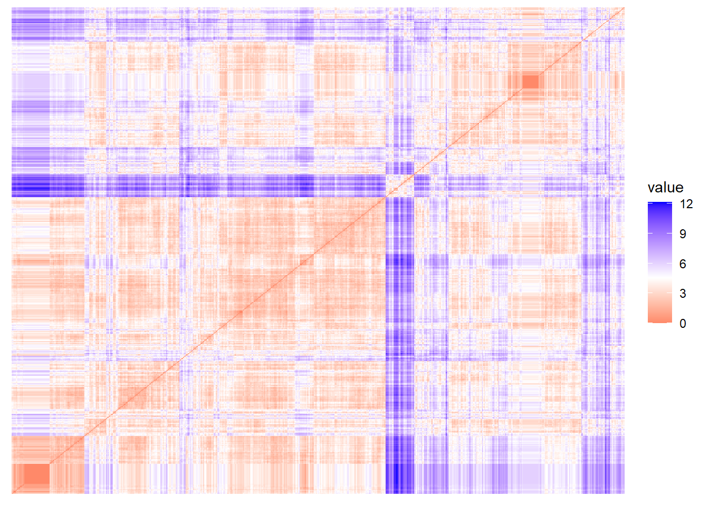
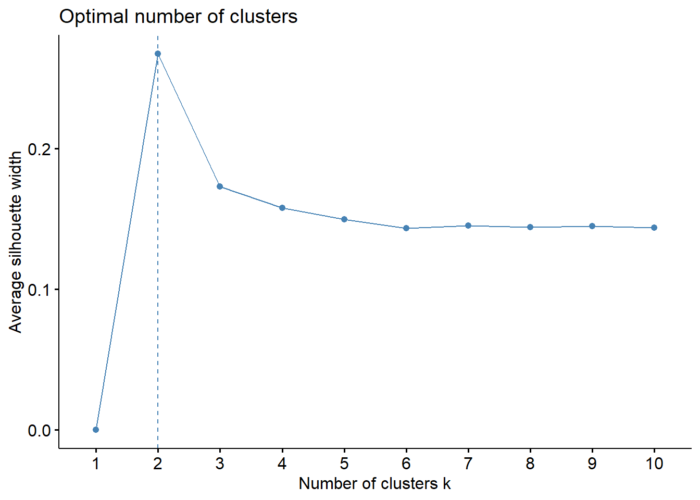
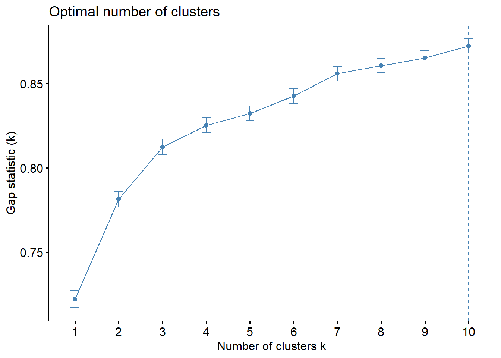
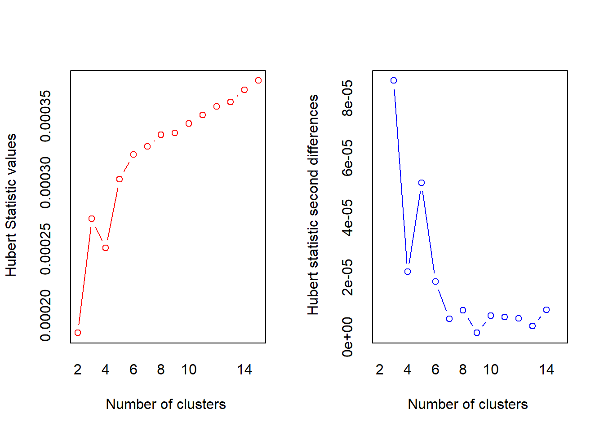
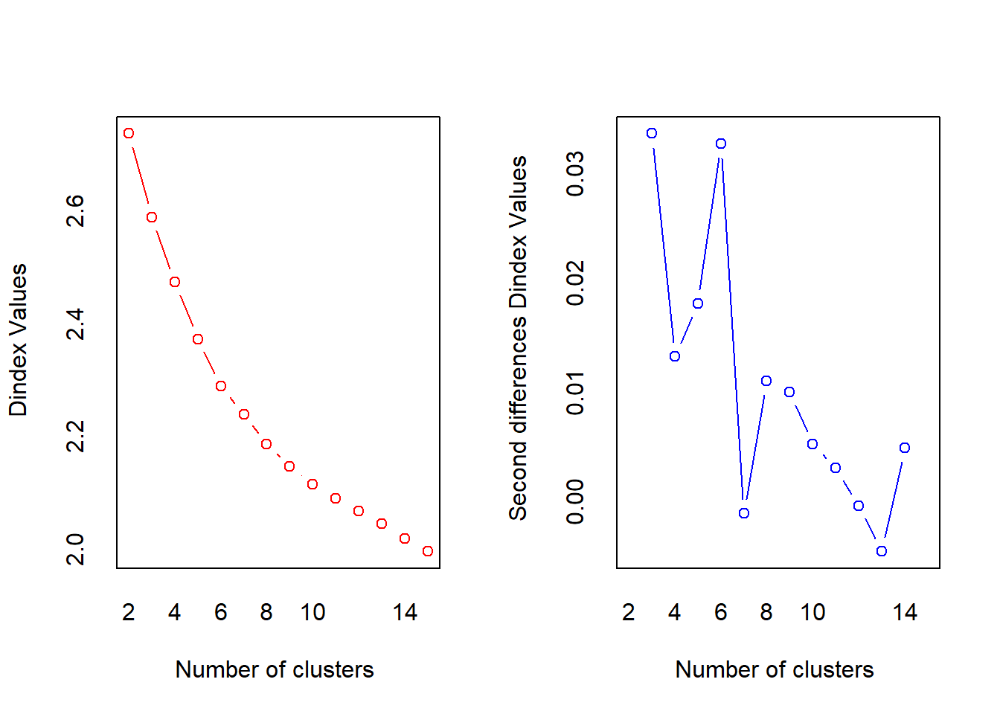
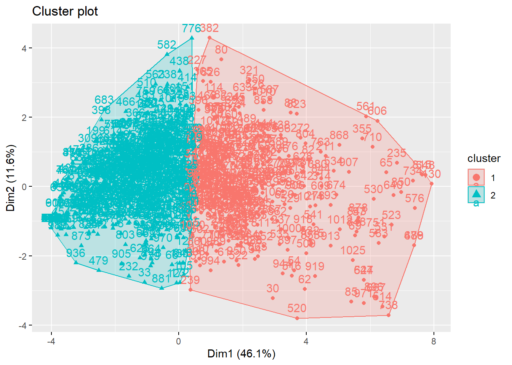

Osiossa käytetyt paketit
library(hopkins) # Ryvästyspiirteisyyden arviointi
library(factoextra) # Ryhmittelyanalyysien visualisoinnit
library(NbClust) # Ryppäiden määrän estimoinnin työkaluja
library(tidyverse)Tässä osiossa tarkistamme toimintaohjelman käyttöönottoon liittyvien mittareiden tuottamat ryppäät. Ryhmittelyanalyysissa (engl. cluster analysis) ryhmitämme vastaajat ryhmiin, jotka maksimoivat ryhmien sisäisen samankaltaisuuden ja minimoivat ryhmien välisen samankaltaisuuden.
Valitsimme kaikki 12 pelastustoimen tasa-arvon ja yhdenvertaisuuden toimintaohjelman toimenpiteiden käyttöönottomuuttujat mukaan analyysiin:
k28_1: Tasa-arvo- tai yhdenvertaisuussuunnitelmak28_2: Toimintaohjeet epäasialliseen käytökseen, häirintään tai seksuaaliseen häirintään reagointiink28_3: Henkilöstön turvallisuusselvityksetk28_4: Ohjeet alaikäisten koskemattomuuden turvaamisellek28_5: Nuorten kanssa toimivien rikostaustojen tarkastaminenk28_6: Ohjeet ahdistelutilanteen käsittelyynk28_7: Ohjeet uhka- ja väkivaltatilanteen käsittelyynk28_8: Ilmoitusjärjestelmä epäasiallisen kohtelun raportoimiseksik28_9: Koulutus uhka- ja väkivaltatilanteiden kohtaamiseenk28_10: Koulutus epäasiallisen kohtelun tunnistamiseenk28_11: Keskustelutilaisuuksia tasa-arvo- ja yhdenvertaisuusaiheistak28_12: Henkilöstön infotilaisuudet organisaation yhdenvertaisuustilanteestaHopkinsin arvo on 0.9531448, mikä osoittaisi erittäin ryvästynyttä dataa.

Erilaisuusmatriisin väriarvot osoittavat vastaajien erilaisuutta: punainen tarkoittaa täydellistä samanlaisuutta ja sininen täydellistä erilaisuutta. Vastaajat ovat järjestettyjä ryvästyksen mukaisesti.
Matriisissa näkyy jonkin verran ryvästystä. Alkupäässä on ryhmä hyvin samanlaisia vastaajia, kuten myös loppupäässä. Keskellä näkyy joitain ryhmiä, mutta heidän samankaltaisuus on heikompaa.


Siluettimenetelmä ehdottaa kahta ryvästä, gap-menetelmä ehdottaa jopa kymmentä ryvästä.
Testasimme myös useamman eri indeksin menetelmiä NbClust-paketilla.
*** : The Hubert index is a graphical method of determining the number of clusters.
In the plot of Hubert index, we seek a significant knee that corresponds to a
significant increase of the value of the measure i.e the significant peak in Hubert
index second differences plot.
*** : The D index is a graphical method of determining the number of clusters.
In the plot of D index, we seek a significant knee (the significant peak in Dindex
second differences plot) that corresponds to a significant increase of the value of
the measure.
*******************************************************************
* Among all indices:
* 10 proposed 2 as the best number of clusters
* 7 proposed 3 as the best number of clusters
* 1 proposed 4 as the best number of clusters
* 1 proposed 5 as the best number of clusters
* 1 proposed 11 as the best number of clusters
* 3 proposed 15 as the best number of clusters
***** Conclusion *****
* According to the majority rule, the best number of clusters is 2
******************************************************************* Error in if (class(best_nc) == "numeric") print(best_nc) else if (class(best_nc) == : the condition has length > 1

Useimmat indeksit ehdottavat kahta ryvästä.
Päätimme soveltaa kahden klusterin k:n keskiarvon ryvästystä.
Ryväs 1 Ryväs 2
k28_1 -0.6846375 0.4361988
k28_2 -0.7866657 0.5012034
k28_3 -0.5153850 0.3283640
k28_4 -0.4584960 0.2921187
k28_5 -0.3644607 0.2322066
k28_6 -0.8200117 0.5224489
k28_7 -0.8262140 0.5264006
k28_8 -0.7638100 0.4866415
k28_9 -0.6649253 0.4236397
k28_10 -0.7838833 0.4994307
k28_11 -0.6504256 0.4144016
k28_12 -0.6399676 0.4077385
Ryppäät jakaantuvat kahteen selkeään ryhmää: vastaajat, joiden mielestä organisaatioissa on keskiarvoa harvemmin käytössä kaikki toimenpiteet, ja vastaajat, joiden mielestä organisaatioissa on keskiarvoa useammin käytössä toimenpiteet.
Koska ryppäät jakaantuvat näin selkeästi, voimme suorittaa jatkoanalyyseja yksinkertaisilla summamuuttujilla. Jos vastaajan mielestä hänen organisaatiossaan on jokin toimenpide käytössä, useasti myös muut toimenpiteet ovat hänen mielestään käytössä. Emme siis näe eroavaisuuksia toimenpiteiden käyttöönotossa vastaajien välillä muulla tasolla kuin korkeasti ja vähäisesti käyttöönottavien organisaatioiden vastaajien välillä.
# Toimintaohjelman käyttöönoton ryhmittelyanalyysi {#sec-tayvkayttoonotto_validointi}
---
eval: true
cache: true
---
Tässä osiossa tarkistamme toimintaohjelman käyttöönottoon liittyvien mittareiden tuottamat ryppäät. Ryhmittelyanalyysissa (engl. *cluster analysis*) ryhmitämme vastaajat ryhmiin, jotka maksimoivat ryhmien sisäisen samankaltaisuuden ja minimoivat ryhmien välisen samankaltaisuuden.
```{r}
#| label: tayvkayttoonotto_validointi-00-paketit
#| code-summary: "Osiossa käytetyt paketit"
library(hopkins) # Ryvästyspiirteisyyden arviointi
library(factoextra) # Ryhmittelyanalyysien visualisoinnit
library(NbClust) # Ryppäiden määrän estimoinnin työkaluja
library(tidyverse)
```
```{r}
#| label: tayvkayttoonotto_validointi-01-avaaminen
#| code-summary: "Datan avaaminen"
data <- read.csv2("output/anonymisoitudata.csv", tryLogical = FALSE)
```
## Muuttujien valitseminen analyysiin
Valitsimme kaikki 12 pelastustoimen tasa-arvon ja yhdenvertaisuuden toimintaohjelman toimenpiteiden käyttöönottomuuttujat mukaan analyysiin:
- `k28_1`: Tasa-arvo- tai yhdenvertaisuussuunnitelma
- `k28_2`: Toimintaohjeet epäasialliseen käytökseen, häirintään tai seksuaaliseen häirintään reagointiin
- `k28_3`: Henkilöstön turvallisuusselvitykset
- `k28_4`: Ohjeet alaikäisten koskemattomuuden turvaamiselle
- `k28_5`: Nuorten kanssa toimivien rikostaustojen tarkastaminen
- `k28_6`: Ohjeet ahdistelutilanteen käsittelyyn
- `k28_7`: Ohjeet uhka- ja väkivaltatilanteen käsittelyyn
- `k28_8`: Ilmoitusjärjestelmä epäasiallisen kohtelun raportoimiseksi
- `k28_9`: Koulutus uhka- ja väkivaltatilanteiden kohtaamiseen
- `k28_10`: Koulutus epäasiallisen kohtelun tunnistamiseen
- `k28_11`: Keskustelutilaisuuksia tasa-arvo- ja yhdenvertaisuusaiheista
- `k28_12`: Henkilöstön infotilaisuudet organisaation yhdenvertaisuustilanteesta
```{r}
#| label: tayvkayttoonotto_validointi-02-datavalmistelu
#| code-summary: "Datan valmistelu ryhmittelyanalyysia varten"
data.valmis <- data |>
select(k28_1:k28_12) |>
na.omit() |>
scale()
```
## Ryvästyspiirteisyyden arviointi
Hopkinsin arvo on `r set.seed(1234); hopkins::hopkins(X = data.valmis)`, mikä osoittaisi erittäin ryvästynyttä dataa.
```{r}
#| label: fig-tayvkayttoonotto_validointi-03-ryvastysvis
#| fig-cap: "Muuttujien erilaisuusmatriisi"
#| code-summary: "Erilaisuusmatriisin piirtäminen"
fviz_dist(
dist(data.valmis),
show_labels = FALSE
)
```
Erilaisuusmatriisin väriarvot osoittavat vastaajien erilaisuutta: punainen tarkoittaa täydellistä samanlaisuutta ja sininen täydellistä erilaisuutta. Vastaajat ovat järjestettyjä ryvästyksen mukaisesti.
Matriisissa näkyy jonkin verran ryvästystä. Alkupäässä on ryhmä hyvin samanlaisia vastaajia, kuten myös loppupäässä. Keskellä näkyy joitain ryhmiä, mutta heidän samankaltaisuus on heikompaa.
## Ryppäiden määrän arviointi
```{r}
#| label: fig-tayvkayttoonotto_validointi-04-ryvasmaara
#| fig-cap: "Ryppäiden määrän arviointi"
#| fig-subcap:
#| - "Siluettimenetelmä"
#| - "Gap-menetelmä"
#| layout-ncol: 2
#| warning: false
#| code-summary: "Klusterien määrän arviointi siluetti- ja gap-menetelmillä"
# Siluettimenetelmä
fviz_nbclust(
x = data.valmis,
kmeans,
method = "silhouette"
)
# Gap-tilastomenetelmä
# Prosessi kestää noin 3 minuuttia Intel Core i5-1335U -prosessorilla
fviz_nbclust(
x = data.valmis,
kmeans,
nstart = 25,
method = "gap_stat",
nboot = 500
)
```
Siluettimenetelmä ehdottaa kahta ryvästä, gap-menetelmä ehdottaa jopa kymmentä ryvästä.
Testasimme myös useamman eri indeksin menetelmiä `NbClust`-paketilla.
```{r}
#| label: fig-tayvkayttoonotto_validointi-05-ryvasmaara2
#| fig-cap: "Ehdotettujen ryppäiden määrät eri indekseillä"
#| code-summary: "Useamman indeksin testaus samanaikaisesti"
#| error: true
nb <- NbClust(
data = data.valmis,
distance = "euclidean",
method = "kmeans"
)
fviz_nbclust(nb)
```
Useimmat indeksit ehdottavat kahta ryvästä.
Päätimme soveltaa kahden klusterin k:n keskiarvon ryvästystä.
## K:n keskiarvon ryvästys
```{r}
#| label: tayvkayttoonotto_validointi-06-kmeansryvastys
#| code-summary: "K:n keskiarvon ryvästyksen laskenta"
ryvastys <- kmeans(
x = data.valmis,
centers = 2,
nstart = 25
)
aggregate(
data.valmis,
by = list(cluster = ryvastys$cluster),
mean
) |>
t() |>
as.data.frame() |>
rename(
"Ryväs 1" = "V1",
"Ryväs 2" = "V2"
) |>
slice(2:n())
data.ryvastetty <- cbind(data.valmis, ryväs = ryvastys$cluster)
```
```{r}
#| label: fig-tayvkayttoonotto_validointi-07-ryvastysvis
#| fig-cap: "K:n keskiarvon ryvästyksen visualisointi PCA-menetelmällä (k = 2, kaksi PCA-ulottuvuutta)"
#| code-summary: "Ryvästyksen visualisointi"
fviz_cluster(
ryvastys,
data = data.valmis
)
```
Ryppäät jakaantuvat kahteen selkeään ryhmää: vastaajat, joiden mielestä organisaatioissa on keskiarvoa harvemmin käytössä kaikki toimenpiteet, ja vastaajat, joiden mielestä organisaatioissa on keskiarvoa useammin käytössä toimenpiteet.
Koska ryppäät jakaantuvat näin selkeästi, voimme suorittaa jatkoanalyyseja yksinkertaisilla summamuuttujilla. Jos vastaajan mielestä hänen organisaatiossaan on jokin toimenpide käytössä, useasti myös muut toimenpiteet ovat hänen mielestään käytössä. Emme siis näe eroavaisuuksia toimenpiteiden käyttöönotossa vastaajien välillä muulla tasolla kuin korkeasti ja vähäisesti käyttöönottavien organisaatioiden vastaajien välillä.